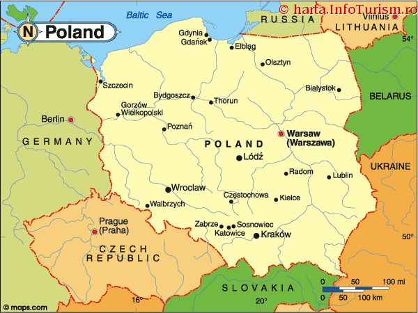

Polonia (oficial Republica Polonă) este un stat european din Europa Centrală, având ca vecini: Germania, Cehia, Slovacia, Ucraina, Belarus, Lituania și Rusia, și are ieșire la Marea Baltică. Suprafața Poloniei este de 312.679 km², fiind al 70-lea cel mai mare stat din lume. În 2021, Polonia avea o populație de 38,5 milioane de locuitori, situând-o pe locul 38 la populație. Polonia este o putere regională, fiind a opta ca mărime și una dintre cele mai dinamice economii din UE, având un nivel scăzut de corupție și un nivel foarte mare de dezvoltare umană. Aceasta a devenit membră a Uniunii Europene la data de 1 mai 2004, alături de alte 9 state. Pe lângă Uniunea Europeană, Polonia mai este membră a NATO, ONU, OECD (Organizația pentru Cooperare și Dezvoltare Economică) și a Organizației Mondiale a Comerțului.
GEOGRAFIE
Polonia este situată în nordul Europei Centrale, între 49° - 54° 50' latitudine nordică și 14° 7' - 24° 8' longtitudine estică. Teritoriul Poloniei cuprinde 16 voievodate, 310 județe, 63 municipii și 2489 comune. După suprafață, Polonia ocupă locul 9 în Europa și locul 69 în lume. Întinderea Poloniei este de 15° 51'. Aceasta are o lungime de 649 km, sau 5° 50', de la nord la sud. Lungimea acesteia duce la o diferență a duratei zilei între nordul și sudul țării. De la vest la est, țara măsoară 689 km, sau 10° 2'. Polonia se află în fusul orar al Europei Centrale, timpul solar al meridianului 15°.
Punctele extreme ale Poloniei sunt:
la sud: vârful Opołonek (49° 00' N)
la nord: Jastrzębia Góra, cartierul orașului Władysławowo (54° 50' N)
la vest: curba fluviului Odra în apropierea satului Osinów Dolny (14° 07' E)
la est: curba râului Bug în apropierea satului Zosin (24° 09')

APE
Cu aproape 10.000 de corpuri de apă, acoperind mai mult de un hectar, Polonia este al doilea stat european cu cele mai multe lacuri, fiind depășită doar de Finlanda. Cele mai mari lacuri se regăsesc în Mazuria, cu o întindere de peste 100 km².
Cât timp majoritatea râurilor poloneze se varsă direct sau indirect în Marea Baltică, unele râuri au afluenți care se varsă, prin Váh și Dunăre, în Marea Neagră.
Cel mai adânc lac este lacul Hańcza, aflat în apropierea orașului Suwałki. Acesta are o adâncime de 108,5 metri.
CLIMĂ
Polonia are o climă moderată, caldă tranzitivă, unde temperaturile din sud ating valori mai înalte decât în nord. Vara, temperatura medie este de 17 °C pe coastă, iar iarna, temperaturile medii sunt între 0 °C în Świnoujście și -7 °C în Suwałki. Precipitațiile sunt intense tot anul, dar, mai ales în est, iarna este mai secetoasă decât vara.
ORAȘE
În Polonia sunt 913 orașe, dintre care cele mai recente două au primit titlul de orașe la 1 ianuarie 2014. Cel mai mic oraș este Wyśmierzyce, cu o populație de 906 locuitori, cât timp cel mai mare, Varșovia, are o populație de 1.758.536 de locuitori.
În Polonia, se regăsesc 17 orașe cu o populație mai mare de 200.000 de locuitori:
Varșovia — 1.758.536 de locuitori
Cracovia — 766 739 de locuitori
Łódź — 693 797 de locuitori
Wrocław — 638.364 de locuitori
Poznań — 551.627 de locuitori
Gdańsk — 463.754 de locuitori
Szczecin — 405.657 de locuitori
Bydgoszcz — 366.074 de locuitori
Lublin — 354.967 de locuitori
Katowice — 317.220 de locuitori
Białystok — 294.864 de locuitori
Gdynia — 252.791 de locuitori
Częstochowa — 246.890 de locuitori
Radom — 227.018 de locuitori
Sosnowiec — 226.034 de locuitori
Kielce — 208.193 de locuitori
Toruń — 208.007 de locuitori
DEMOGRAFIE
95,63% din populația Poloniei este reprezentată de polonezi. La recensământul din 2021, populația de 38.036,1 de locuitori a Poloniei era alcătuită din:
37.924,2 de mii de polonezi
53 de mii de ucrainieni
18,6 de mii de belaruși
4,9 de mii de ruși
3,5 de mii de germani
2,8 de mii de vietnamezi
2 mii de britanici
1,9 de mii de italieni
0,3 de mii de locuitori aveau cetățenie necunoscută.
DEMOGRAFIE
Singura limbă oficială a Poloniei este poloneza, fiind și cea mai răspândită limbă din țară, utilizată de 97% din locuitori. Alte patru limbi sunt limbi auxiliare:
bielorusa (aprox. 220.000 de vorbitori)
cașubiana (aprox. 3.000 - 200.000 de vorbitori)
germana (aprox. 500.000 de vorbitori)
lituaniana (aprox. 3.000 de vorbitori)
Alte limbi folosite sunt romani (aprox. 40.000 de vorbitori) și ucraineana (aprox. 150.000 de vorbitori).
În Polonia se studiază și limbi străine. Cea mai populară este engleza, urmată de germană. Înainte de schimbările politice din 1989, limba rusă era cea mai cunoscută. Studenții universităților pot să învețe și alte limbi, precum ceha, greaca sau româna, dacă aleg studii filologice.
ASOCIAȚIA POLONEZĂ DE FOTBAL (PZPN)
Asociația Poloneză de Fotbal (PZPN) este autoritatea conducătoare a fotbalului în Polonia. A fost fondată în 1919, iar sediul central se află în Varșovia. Se ocupă cu organizarea fotbalului polonez: prima ligă Ekstraklasa, Cupa Poloniei, Supercupa Poloniei și Echipa Națională de Fotbal a Poloniei.
Echipa Națională de Fotbal a Poloniei reprezintă PZPN în competițiile regionale și internaționale. Cei mai selecționați jucători au fost, în 2021:

{kind=link}
{kind=link}
{kind=link}
{kind=link}
{kind=link}
{kind=link}
{kind=link}
{kind=link}
{kind=link}